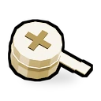
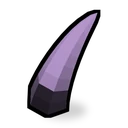

Rook's Bounty Board
Rook's Bounty Board is where Rook hands out bounties: a target and a count, paid in Marks.
Targets
| Target | Kills | Rook says |
|---|---|---|
| Zombies | 15–25 | Zombies keep wandering onto the farms. |
| Slimes | 12–20 | Slimes are getting into the town's water. |
| Squirrels | 6–10 | Squirrels have been biting people on the road. |
| Entlings | 8–14 | Entlings have been knocking down fences by the woods. |
| Bandits | 20–30 | Bandits robbed the mill cart again last night. |
| Cultists | 12–18 | Cultists are gathering at the tower again. |
| Super Zombies | 8–12 | The big zombies are back, and they hit hard. |
| Bandit Elites | 10–15 | The bandits' best fighters are out on the roads. |
| The Cyclops | 3–5 | The Cyclops has been throwing rocks at the farms. |
| The Bandit King | 3–5 | The Bandit King is back in charge of his camp. |
| The Brothers | 3–4 | Punchy, Shooty and Bernie are causing trouble again. |
| The Cult Leader | 2–3 | The Cult Leader is back at the top of the tower. |
| The Garbage Man | 2–3 | The Garbage Man is dumping trash on the roads. |
| The Slime King | 2–3 | The Slime King is back in the grotto. |
| Sand Zombies | 10–16 | Sand zombies attacked a caravan near the Dust Bowl. |
| Worms | 6–8 | Worms keep coming up under the caravan road. |
| Raiders | 8–12 | Raiders are robbing every cart that leaves the desert. |
| Mummies | 6–10 | Mummies have started leaving the Pyramids. |
| The Desert Worm | 1–2 | The Desert Worm swallowed a supply wagon. |
| The Scrap Warlord | 1–2 | The Scrap Warlord is sending his crew out again. |
| The Possessed Sarcophagus | 1–2 | The Possessed Sarcophagus is awake again. |
| Rocklings | 8–12 | Rocklings are blocking the paths in the Sand Cave. |
| Cave Spiders | 6–8 | Cave spiders are nesting by the cave entrance. |
| The Sandstone Golem | 1–2 | The Sandstone Golem is guarding the cave again. |
| The Undead | 15–25 | Dead things are walking in the fields and the desert. |
| Cultists of Any Kind | 12–18 | Cultists are busy in the tower and out in the desert. |
| Outlaws | 20–30 | Outlaws are robbing people on every road. |
| Beasts | 12–18 | Wild animals have been attacking travellers. |
| Sand Veil Cultists | 8–12 | The Sand Veil are digging near their station again. |
| The Unbound | 1–2 | The Unbound is loose in the desert again. |
Marks
A turned-in bounty pays 10, 12, 15, 18, 22 Marks by its tier, half as much again for a boss.
The Marks shop
| Offer | Marks | Rank | What it does |
|---|---|---|---|
| A second offer | 60 | 2 | Choose between two bounties. |
| A third offer | 200 | 5 | Choose between three bounties. |
| Twists | 100 | 3 | Bounties that ask more and pay more. Switch them on or off before a deal. |
| Block a target | 80 | 2 | Keep one target off your board. Up to three. |
| Longer bounties | 120 | 4 | Needs 50% more kills and pays 50% more Marks. Switch it on or off. |
| Another new offer | 100 | 3 | Two free new offers a day instead of one. |
| More Marks | 150 | 3 | Every bounty you turn in pays half again the Marks. |
| Target scent | 150 | 3 | Your target turns up twice as often in its regions. |
| Marked hunts | 250 | 4 | Your target is more often a champion, and a Marked one drops a trophy. |
| Hunters' Pick | 400 | 7 | One offer in every deal is a target hunters take most. From your next deal. |
 Hunter's Ring I Hunter's Ring I | 150 | 2 | Works while you hold a bounty. Can't be traded. |
 Hunter's Ring II Hunter's Ring II | 300 | 4 | Takes your Hunter's Ring I. Can't be traded. |
| Hunter's Ring III | 500 | 6 | Takes your Hunter's Ring II. Can't be traded. |
 Hunter's Ring IV Hunter's Ring IV | 800 | 8 | Takes your Hunter's Ring III. Can't be traded. |
 Hunter's Ring V Hunter's Ring V | 1,200 | 10 | Takes your Hunter's Ring IV. Can't be traded. |
| A chart | 20 | 1 | A chart for any region open to you. |
 Treasure Seal Treasure Seal | 40 | 2 | Raises a chest a tier. |
 Respec Shard Respec Shard | 75 | 5 | Switch to a saved build. |
 Grave Tooth Grave Tooth | 0 | 1 | 5 Marks each. |
| Slime Core | 0 | 1 | 5 Marks each. |
 Bushy Tail Bushy Tail | 0 | 1 | 5 Marks each. |
 Heartwood Knot Heartwood Knot | 0 | 1 | 5 Marks each. |
 Wanted Poster Wanted Poster | 0 | 1 | 5 Marks each. |
 Cult Sigil Cult Sigil | 0 | 1 | 5 Marks each. |
 Hunter's Trophy Hunter's Trophy | 0 | 1 | 5 Marks each. |
 Sand Leather Sand Leather | 0 | 1 | 5 Marks each. |
 Wormling Husk Wormling Husk | 0 | 1 | 5 Marks each. |
| 0 | 1 | 5 Marks each. | |
 Burial Wrap | 0 | 1 | 5 Marks each. |
 Rockling Core Rockling Core | 0 | 1 | 5 Marks each. |
 Spider Fang | 0 | 1 | 5 Marks each. |